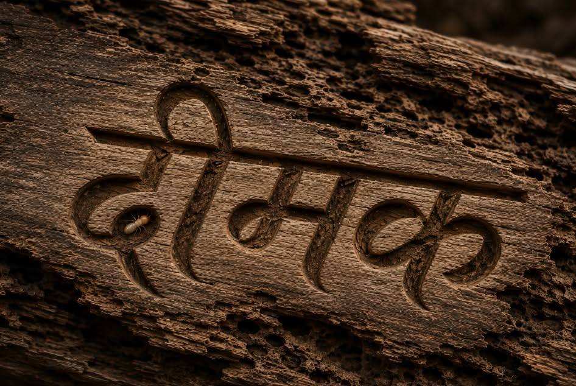
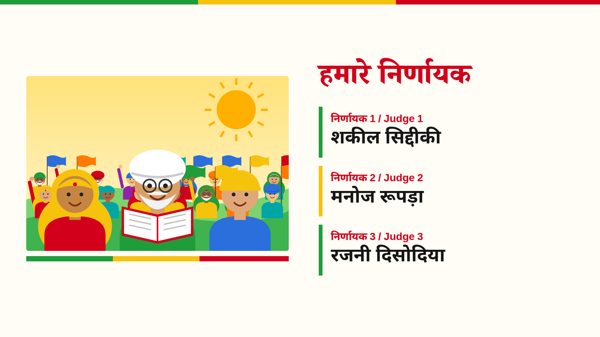
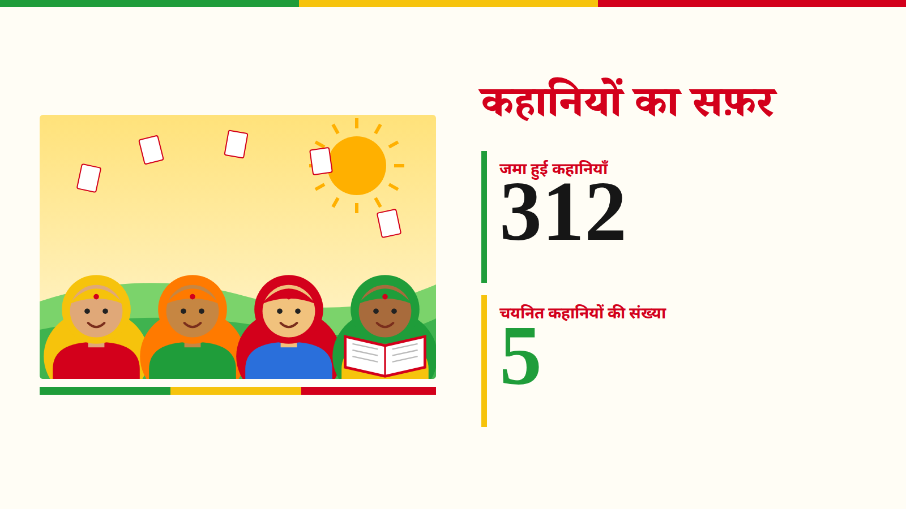
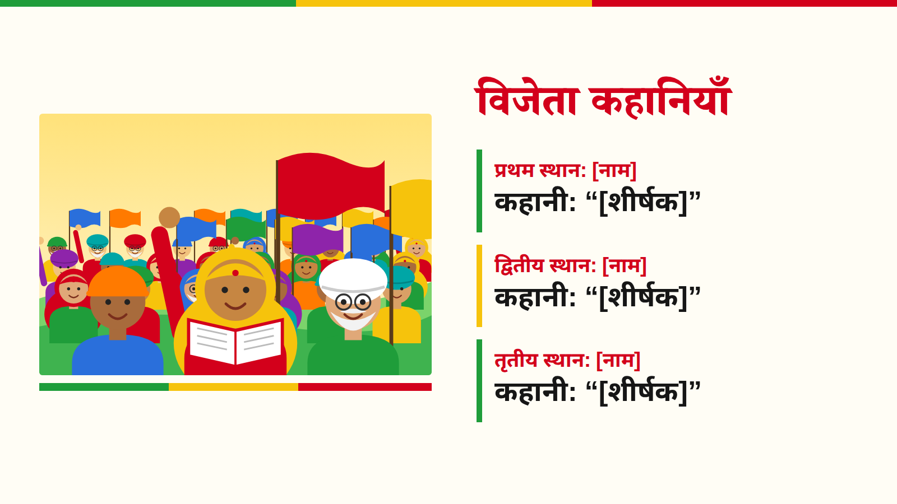
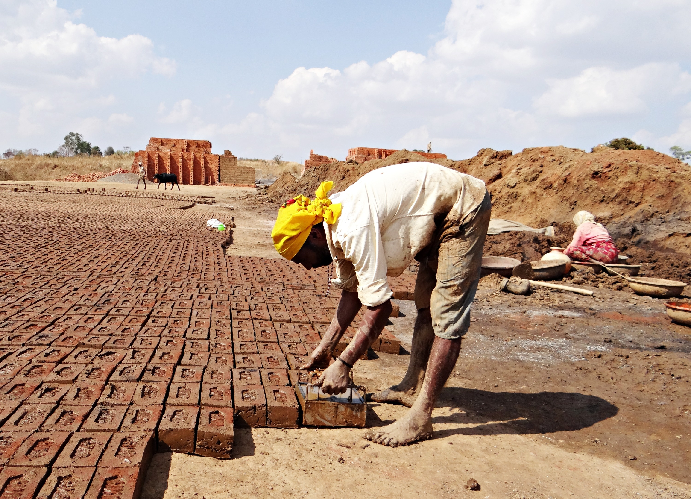

दीमक क्यों?Why Deemak?
हर समाज अपने साथ कुछ मृत काष्ठ भी ढोता है—ऐसे विचार, संस्थाएँ और परम्पराएँ जिनमें जीवन नहीं बचा, फिर भी वे हमारे वर्तमान पर शासन करती हैं। ‘दीमक’ उनका शत्रु नहीं, उनका परीक्षक है।
Every society carries some dead wood: ideas, institutions and traditions in which no life remains, yet which still rule our present. The ‘Deemak’ is not their enemy but their examiner.
दीमक कहानी प्रतियोगिता 2026 के परिणामDeemak Story Competition 2026 Results

हिन्दी कहानी की विकास यात्रा पर सरसरी
The editors on our name and our intent.
पढ़ेंRead ›
हिन्दी कहानी की विकास यात्रा पर सरसरी
The editors on our name and our intent.
पढ़ेंRead ›
हिन्दी कहानी की विकास यात्रा पर सरसरी
The editors on our name and our intent.
पढ़ेंRead ›सर्वाधिक पढ़ी गईMost read
तस्वीरों में: संघर्ष की तस्वीरेंIn pictures: images of struggle

मोहल्ले की बैठक

साझा रसोई

बस्ती का मार्च

शहर की रैली

सामुदायिक सभा

अधिकारों का जुलूस

एकता का झंडा

फ़ैक्टरी के गेट पर

हड़ताल का दिन

मई दिवस का जुलूस

निर्माण मज़दूरों की सभा
खदान मज़दूरों की माँग

बुनकरों की आवाज़

श्रम क़ानूनों पर धरना

खेत से संसद तक

फ़सल के दाम की माँग

ट्रैक्टर मार्च

धरने पर किसान

महिला किसान सभा

भूमि अधिकार यात्रा

बटाईदारों की पंचायत

बेड़ियाँ तोड़ती आवाज़

समता की सभा

मंदिर प्रवेश की माँग

पानी पर बराबर हक़

शिक्षा का अधिकार

संविधान का पाठ

जाति-विरोधी रैली

पितृसत्ता के विरुद्ध मार्च

रात पर हमारा हक़

बराबर मज़दूरी

घर और बाहर बराबरी

पंचायत में महिलाएँ

बेटियों की पढ़ाई

आवाज़ उठाती औरतें
हमारी ओर सेFrom Us
घोषणाAnnouncementsआलेखWrite-upsसर्वाधिक पढ़ी गईMost readदीमक क्यों?Why Deemak?दीमक कहानी प्रतियोगिताStory Competition
2026: लंबी सूची, छोटी सूची, विजेता2026: long list, short list, winnerनिर्णायक मंडलJuryकहानी की समीक्षाAnalysis of the storyसाहित्यLiterature
कहानियाँ, उनकी समीक्षा और आलोचना।
Stories with analysis and criticism.
पढ़ेंRead ›संघर्षों का इतिहासChronicles of Past Struggles
अंशExcerptsसाक्षात्कारInterview
वीडियोVideo

अपनी कहानी हमें भेजेंSend us your story
दीमक पत्रिका पाठकों की राय और रचनाओं से बनती है। हमें लिखें।
Deemak Patrika is shaped by its readers’ views and writing. Write to us.
प्रतिक्रिया भेजेंSend feedback